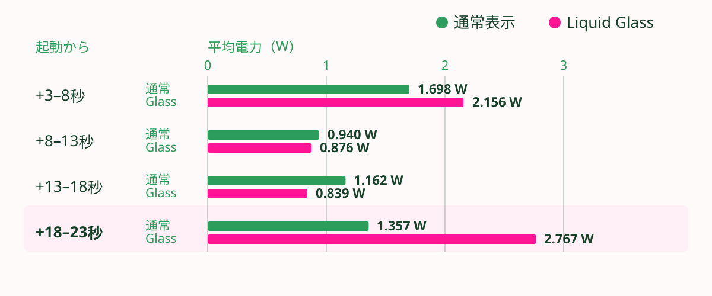

画面の滑らかさの裏側
DevToolsから考えるFlutterアプリのバッテリー消費と最適化
Behind Smooth Scrolling: Evaluating Flutter App Battery Consumption via DevTools
anushka・opheliagame・アン
背景：BackdropFilter

背景：Performance
 Building performant Flutter widgets
Building performant Flutter widgets
調査：Liquid Glass + BackdropFilter
Liquid Glassのぼかしを実装するために使う画面全体のBackdropFilterはパーフォマンスにどれぐらい影響あるのでしょうか？🤔
アプリのエネルギー使用をどうやって測るのか
Flutterだけだとみれる項目が限定され、Nativeのツールの方がより正確
Android Performance Analyzer

Android Performance Analyzer: トレーステストを開始

Android Performance Analyzer: トレーステストを開始

Android Performance Analyzer: トレーステストを開始

Android Performance Analyzer: トレーステスト結果

Android Performance Analyzer: トレーステスト結果

Android Performance Analyzer: トレーステスト結果

Android Performance Analyzer: Android Profiler Skills
Android CLIからインストール方法
android skills add android-profiler

計測結果：ぼかし（FlutterでLiquid Glass実装）・エネルギー
ぼかし中はエネルギー利用が28%増加

なぜこのような結果になったのでしょうか
Widgetの裏側：BackdropFilter
画面を描画するとき、
RenderBackdropFilter
は
canvas.saveLayer()
を呼び出す。
saveLayer()がとても重い処理
saveLayer()が呼ばれる際にGPUが担当すること
- 今の画面の背景（はいけい）をコピーして、別の場所に保存する。
- その背景に「ぼかし（Blur）」の計算をする。
- ぼかした画像を、もう一度メインの画面に合成（ごうせい）する。
フレームごとに実行、 1秒間に60回から120回
ドキュメントを確認

「This effect is relatively expensive, especially if the filter is non-local, such as a blur.」
「この処理は比較的コストが高い。特に、ぼかしのように、フィルタが非局所的である場合はなおさらである。」
+
画面全体ぼかし、いわゆるLiquidGlass実装
=
結果
なるほど！
まとめ
- エネルギー消費量を実際に測る手順・ツール
- BackdropFilterなど、エネルギー消費量の多いWidgetに注意が必要
- 最終的にはパフォーマンスとデザインのトレードオフになる
- 計測することでトレードオフによるチーム判断の資料として、役に立つ
X @oopheliagame
Github @opheliagame